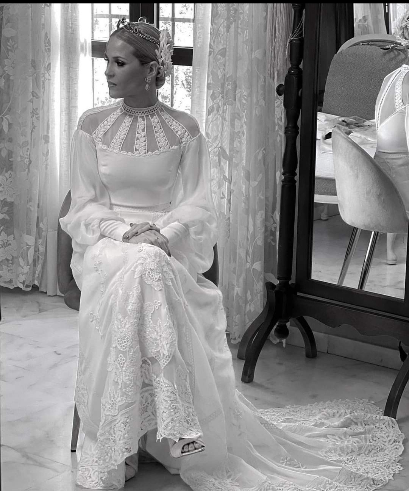
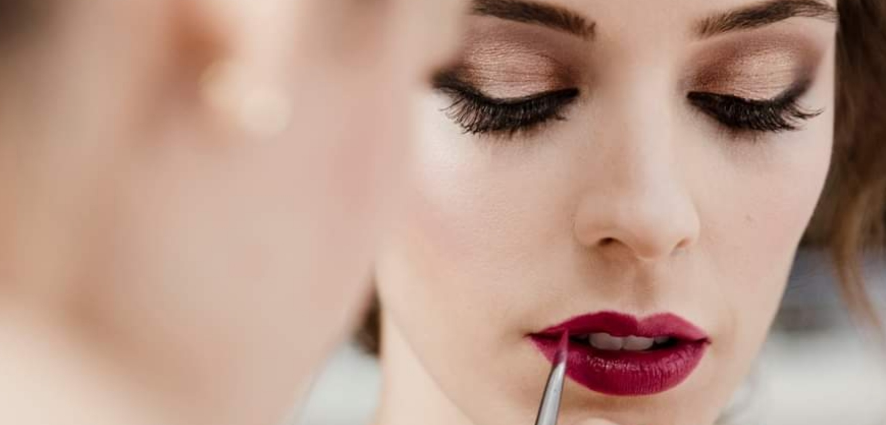
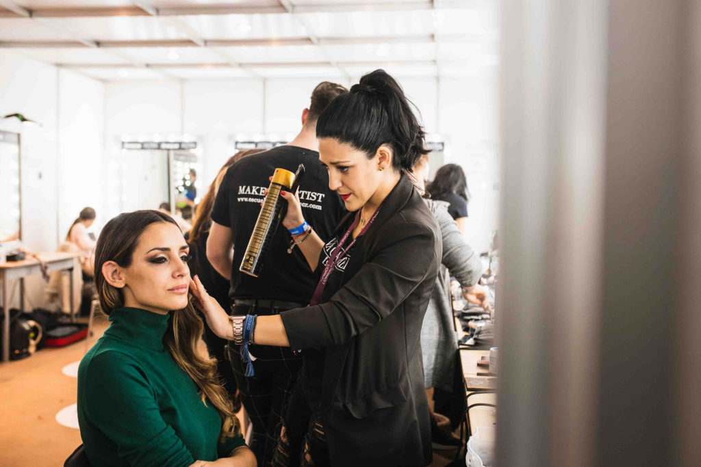

Especialista en bodas:
Un día tan especial merece un trato único y profesional.
Tanto si eres novia o invitada, pongo a tu disposición todos mis años de experiencia
para lograr un ambiente acogedor y de confianza, donde haré que estés radiante para ti
y para los tuyos.
Amplia experiencia en eventos especiales:
¿Tienes un evento y quieres lucir un look especial?
Desde una cena de empresa en la que quieres estar radiante
hasta una gala de premios donde necesitas un look sofisticado,
ponte en manos de una profesional y marca la diferencia.
Amplia experiencia en pasarelas de moda, reportajes de revistas, publicidad y televisón

Embajadora de marcas de cosmética:
¿Tienes un nuevo producto cosmético y quieres lanzarlo por todo lo alto?
20 años de experiencia como embajadora de reconocidas marcas de productos cosméticos,
realizando además la formación necesaria para sacar su máximo rendimiento.
Salón de belleza:
¿Quieres acudir a mi salón de belleza?
En un ambiente de confianza y profesionalidad, serás muy bienvenida
a mi propio salón de belleza para enseñarte todos los servicios y productos
que puedan interesarte sobre tu belleza y la de los tuyos.
